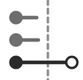
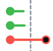
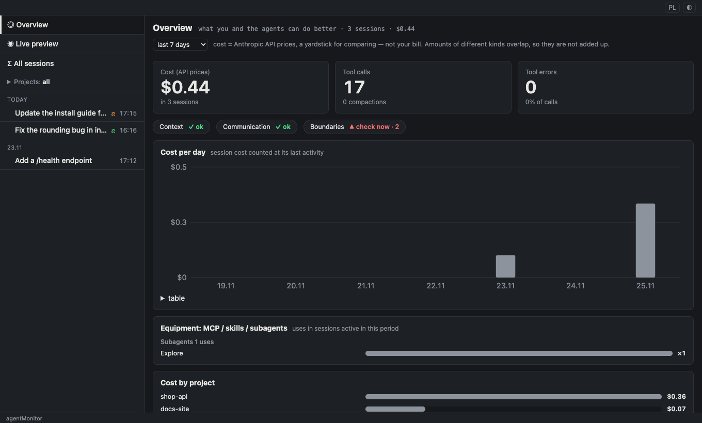
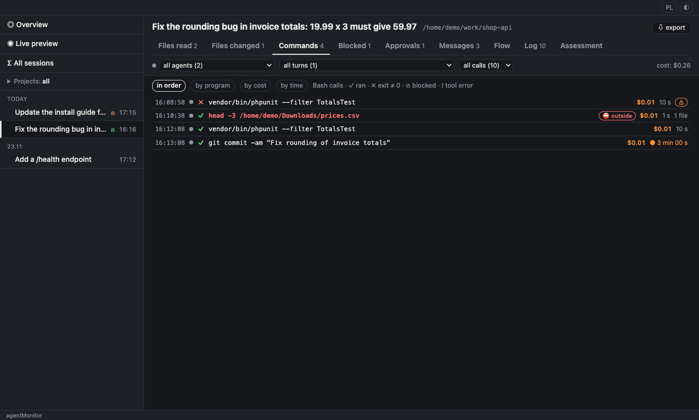
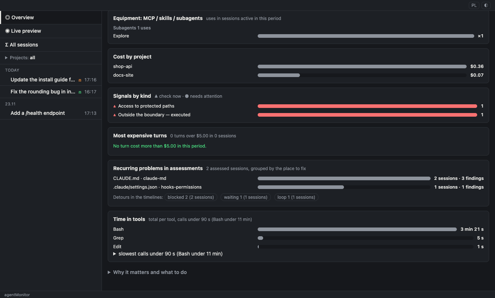
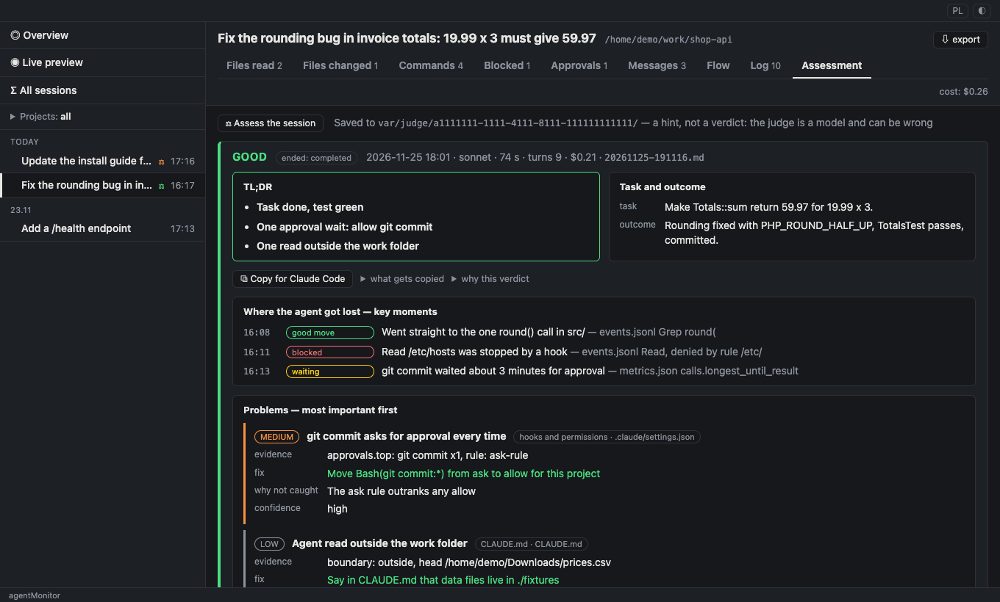
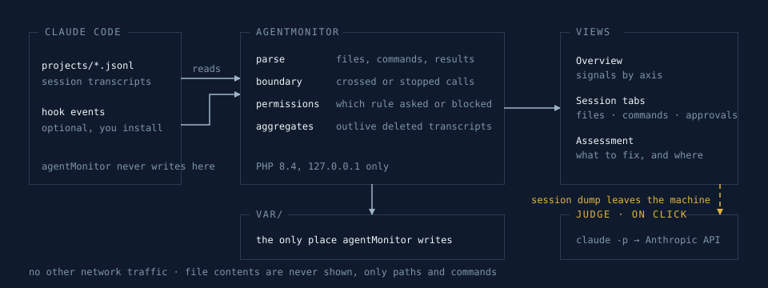

A local audit tool for Claude Code sessions: see what an agent read, changed and ran, where it crossed a permission boundary, and which rule or hook to fix. It writes only to its own var/ folder (the demo uses a temporary one).
You let a Claude Code agent work for an hour. Afterwards you cannot say which files it opened, whether it left the folder you gave it, why it kept asking for approval, or why it made the same mistake as last week. The transcript has the answers, but it is a JSONL file that can reach tens of MB, and Claude Code deletes it after 30 days by default (cleanupPeriodDays).
agentMonitor turns every call into an answer: files read and changed, commands run, calls that left your boundary, and the rule or hook behind each approval prompt and block. Totals outlive the transcripts.

git clone https://github.com/SKrjwsk/agentMonitor.git cd agentMonitor php bin/demo.php
Open http://127.0.0.1:8095/. The demo writes three made-up sessions into a temporary folder and serves a copy of the app on them; nothing in ~/.claude or in the repository is touched, and the session judge is switched off there. Needs PHP 8.4 or newer, macOS or Linux, and no other dependencies.
For your own sessions:
php -S 127.0.0.1:8090 -t public public/index.php
It reads ~/.claude/projects/ and never writes there (the optional judge's own Claude Code run keeps a transcript there).

Set the folders it may work in. Every call outside them is listed as executed, suspicious or stopped, with the command that did it.
The Approvals tab shows each permission prompt and the reason: an ask rule from your settings, a protected path or a command shape.
On request, a session judge writes findings with one owner each: your prompt, CLAUDE.md, a rules file, a hook or the permissions. Recurring problems group them by the file to fix.
Per-session totals stay after Claude Code deletes the transcript. Cost is computed at API list prices: a yardstick, not your bill.



AGENT_ALLOWED_RW and AGENT_ALLOWED_R, and the permissions key of your Claude Code settings.var/, cleared by bin/reset.php.To browse a transcript and reconstruct what was in the context window, claude-devtools goes further. agentMonitor is built for auditing what the agent did against the limits you set.
agentMonitor makes no network requests of its own, with one optional exception.
The session judge starts claude -p on a dump of the session (commands, paths and your prompts, no file contents) only when you press its button. Claude Code sends that to the Anthropic API under your account. The judge has Read, Grep and Glob without a path restriction, so any file it decides to read is sent too.
The server rejects any request that is not from the loopback address; only GET, POST /export and POST /judge are accepted. Security notes.